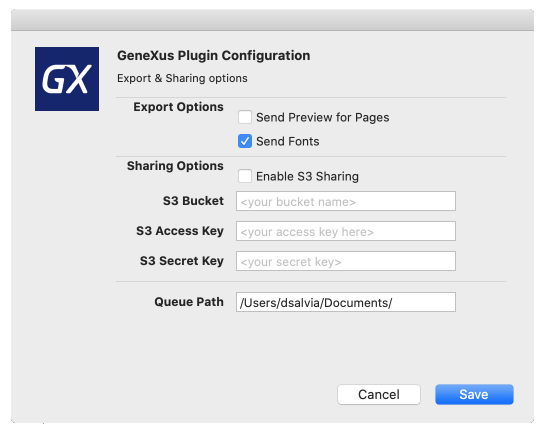
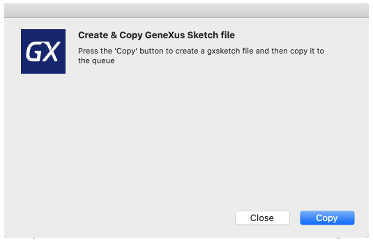
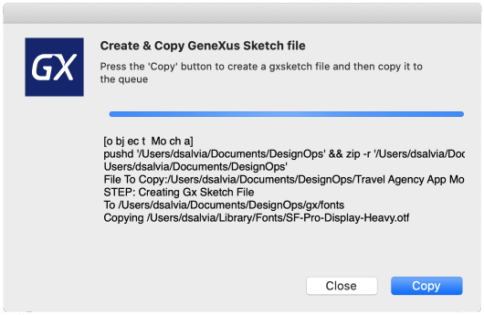

Designers can send designs made in Sketch format to developers. Then, developers can import these designs using the Design Import option in the IDE.
The designer can send what is necessary to the developers using traditional mechanisms (email, shared resource, etc.), or they can also install the GeneXus Plugin for Sketch, which allows you to send the designs.
When a designer sends a design it should include the .sketch file (the design), including images and fonts in separate folders. These files are usually sent separately.
The developer needs to store the .sketch file in a folder that also includes every image under a folder named exactly the same as the .sketch file and suffixed with "Image". The same process must be applied to fonts with a folder suffixed with "Fonts."
For instance, if you save your design as MyFirstDesign.sketch, then every image must be shared with the developer in a directory named /MyFirstDesignImages and every font in a directory named /MyFirstDesignFonts.
/Designs
MyFirstDesign.sketch
/MyFirstDesignImages
Image1.png
Image1@2x.png
Image1@3x.png
... // All exported images, in general by using the export tool of Sketch
/MyFirstDesignFonts
Font1.ttf
Font2.ttf
... // All used fonts
Instead of sending all this information in separate structures, GeneXus created a .gxsketch format to avoid missing some pieces of information when the designer sends information from Sketch to GeneXus.
The .gxsketch format is quite simple; it is just a zip file with the Sketch file, plus images, fonts, and screenshots for each artboard in the Sketch file. You can explore the content with any zip client like 7Zip, WinZip, WinRar, etc.
So, the contents are as follows:
| Sketch | filename.sketch file | The design (Artboards, Symbols, etc.) |
| Images | filenameImages folder | The images used by the designer. Remember to mark as exportable the images that you want to be imported in GeneXus. |
| Fonts | filenameFonts folder | The fonts used by styles in the Sketch file. |
| Screenshots | gx-preview folder | One image per artboard. Used by Sketch Inspector in the IDE to preview the design to developers. |
Download the latest version of the plugin from https://github.com/genexuslabs/sketchdesignops/releases
After download, double-click on the .sketchplugin file.
In order to start sharing with developers, the designer must configure the way of sharing. At this moment there are two options:
1) A shared folder.
2) An AWS S3 bucket.
The designer can configure the export options by executing Plugins > GxDesignOps > Configuration inside Sketch.

| Name | Description |
| Send Preview for Pages | For each artboard on each page, send an embedded screenshot. For big Sketch files, this can take time and increase the .gxsketch file size. |
| Send fonts used. | This option allows you to send the used fonts embedded. Take into account that probably the first designs you want to send will always be the fonts, but once you know for sure that developers already have the necessary fonts you can avoid sending them embedded every time. |
| Enable S3 Sharing | AWS S3 is going to be used as the mechanism to send designs to developers. |
| Queue Path | A shared folder is used to send the design to the developers. The queue path must end on / |
After the plugin has been configured, the designer has 2 options to share the design:
1) Send the GeneXus format to the design queue (.gxsketch).
Go to Plugins > GxDesignOps > Send GeneXus Format option.
2) Send only the Sketch file (.sketch) -- faster but incomplete information, no images, previews, nor fonts are included.
Go to Plugins > GxDesignOps > Send only Sketch File option.
Any option will show a dialog in order to confirm the copy.

The result is shown in the dialog itself.

| Generators | .NET, .NET Core, Java, Android, Apple, Angular |